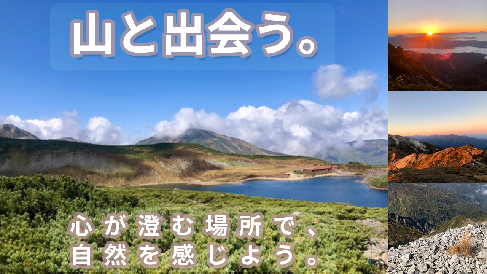

onefree 様からご依頼を頂き作成しました、自然を活かしたSNS用のバナーになります。
担当
デザイン
デザインの目的
SNSを使用して集客・認知拡大
使用技術
Adobe Photoshop
デザインについて
お昼と夕方の山の様子の写真を使用して、自然が伝わりやすいように合成しております。その際に、山の写真、川辺の写真、山登りをしている写真の大きさを調節して見栄えを整えております。文言は山がメインなので、「山と出会う。心が澄む場所で、自然を感じよう。」にして、「山と出会う。」の文字の大きさを大きくして目立たせております。「山と出会う。」の文字の大きさを大きくした分、「心が澄む場所で、」と「自然を感じよう。」の文字間隔を均等に調節して合わせました。文字にそれぞれ境界線とドロップシャドウを付けて、ポップなデザインにしました。文字のところに長方形ツールを入れて、角を丸くして背景の写真に馴染ませてより文字が伝わりやすいデザインにしております。